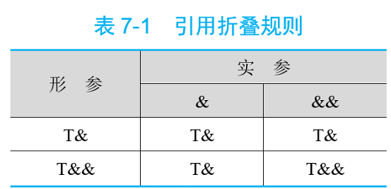
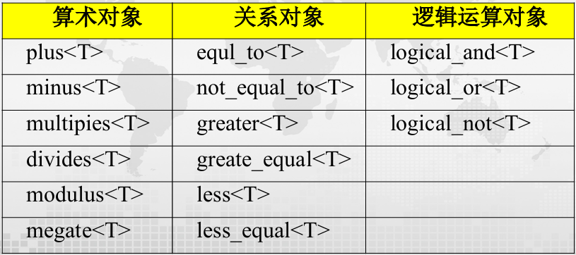
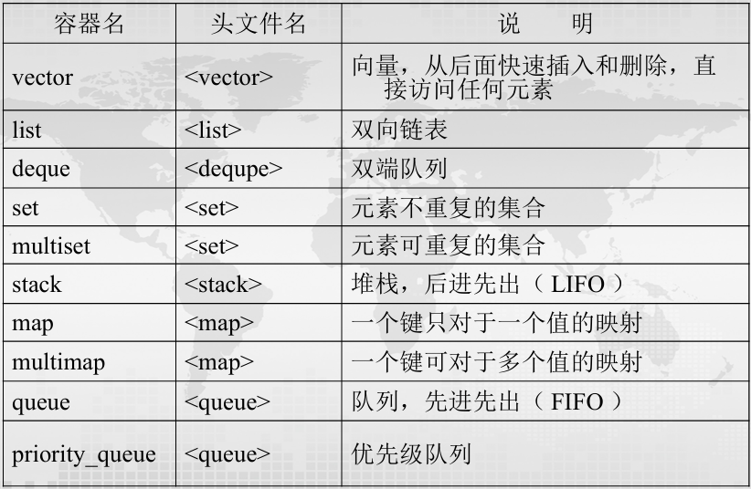
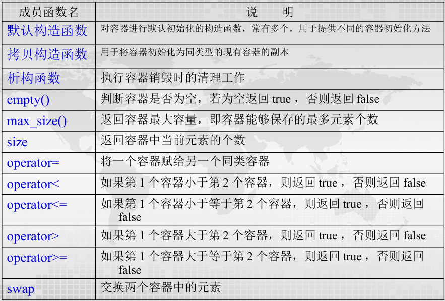
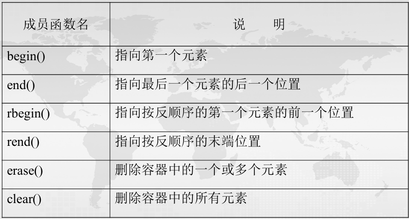
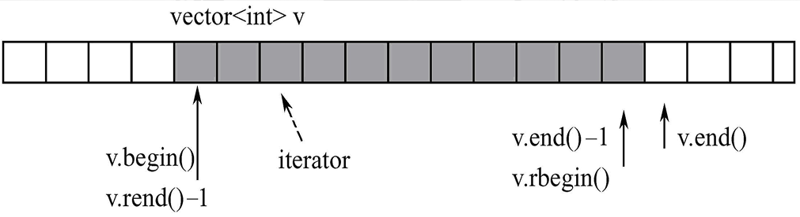
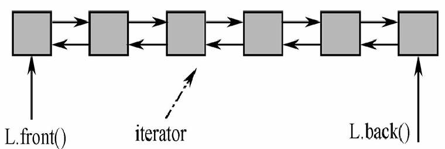

Chapter6 模板与STL
6.1 模板（template）
某些程序除了所处理的数据类型等之外，代码和功能几乎一致，甚至完全相同。如何只写一次代码，却可以处理不同数据类型？我们需要使用模板。
模板分为函数模板（function template） 和 类模板（class template）。
Note
变量→类型
对象→类
类→类模板
函数→函数模板
$~$
6.2 函数模板
$~$
| template <typename T1,typename T2,...>
返回类型 函数名(参数列表)
{
函数体
}
|
template和typename为关键字，T1、T_2等为模板参数，模板参数传递的实参是一种数据类型。
Example
求两数最小值的函数模板。
| template <class T> //class和typename可以互换，二者都是关键字
T min(T a,T b)
{
return a<b?a:b;
}
int main()
{
double a=2,b=3.4;
float c=2.3,d=3.2;
cout<<min(2,3)<<endl; //调用int类型的min，结果为2
cout<<min(a,b)<<endl; //调用double类型的min，结果为2
cout<<min('a','b')<<endl; //调用char类型的min，结果为'a'
cout<<min(c,d)<<endl; //调用float类型的min，结果为2.3
}
|
注意事项：
template语句和函数模板定义之间不能有其他语句；- 函数模板可以出现确定类型参数，称为非类型参数（non-type template parameter），如：
| template <typename T1,typename T2,typename T3,int T4>
T1 fx(T1 a,T2 b,T3 c,int d)
{
...
}
|
- 在传递实参时，非类型参数只能使用常量，例如上面的
T4和d；
- 模板的声明和定义必须保存在同一文件中；
- 非类型参数不允许使用浮点型、双精度型、类对象或
void类型。
$~$
实例化（instantiation）：
模板实例化发生在调用函数模板时。编译器根据调用语句中实参的类型来确定模板参数的数据类型，并加以替换，得到模板函数。例如：
| int x=min(2,3);
int y=min(3,9);
int z=min(8,5);
|
三者实际类型相同，编译器只在第一次调用时生成模板函数，之后相同类型的调用直接使用第一次生成的函数代码。
以上接触到的均为隐式实例化（implicit instantiation），即编译器自行判断模板参数类型。如果无法判断，则需要显式实例化（explicit instantiation），即在调用函数模板时，显示指定模板参数类型。例如：
| template <class T> T max(T a,T b)
{
...
}
int i=max(1,'2'); //错误，编译器无法判断模板参数类型
int i=max<int>(1,'2'); //正确，显式实例化模板参数类型为int
|
$~$
模板参数的匹配问题：
将模板参数替换成调用实参的类型时，不会进行参数类型的任何转换。
例如上面的隐式实例化max(1,'2')，并不会进行隐式类型转换，从而产生编译错误。
解决方法一：在调用模板时进行参数类型的强制转换：
解决方法二：显式实例化：
解决方法三：指定多个模板参数：
| template <class T1,class T2>
T1 max(T1 a,T2 b)
{
return a>b?a:b;
}
|
$~$
6.3 类模板
$~$
类模板可用于设计结构和成员函数完全相同，但所处理的数据类型不同的通用类，如栈等。
| template <typename T1,typename T2,...>
class 类名
{
...
};
|
类模板的成员函数定义：
方法一：模板内定义，与常规方法相同。
方法二：模板外定义：
| template <模板参数列表>
返回值类型 类模板名 <模板参数名称列表>::成员函数名(参数列表)
{
函数体
}
|
Example
设计一个堆栈的类模板Stack，在模板中用类型参数T表示栈中存放的数据，用非类型参数MAXSIZE表示栈的大小。
| template <class T,int MAXSIZE>
class Stack
{
private:
T elems[MAXSIZE];
int top;
public:
Stack() {top=0;}
void push(T e);
T pop();
bool empty(){return top==0;}
bool full(){return top==MAXSIZE;}
};
template <class T,int MAXSIZE>
void Stack<T,MAXSIZE>::push(T e)
{
if(top==MAXSIZE)
{
cout<<"栈已满！"<<endl;
return;
}
elems[top++]=e;
}
template <class T,int MAXSIZE>
T Stack<T,MAXSIZE>::pop()
{
if(top<=0)
{
cout<<"栈已空！"<<endl;
return 0;
}
return elems[--top];
}
|
$~$
类模板的实例化：
当用类模板定义对象时，引起类模板的实例化，得到模板类。类模板在使用时一定要显式指明模板参数类型。
例如，对于上面定义的Stack类模板，下面的定义将引起实例化：
这个时候，将会有：
- 数据成员实例化：将所有类型参数
T替换成int，将所有非类型参数MAXSIZE替换成10，生成一个int类型的模板类
- 成员函数实例化：用
int替换T实例化出被调用的构造函数，但未被调用的成员函数不被实例化
$~$
6.4 模板设计相关问题
$~$
传值模板参数：
| template<typename param>
r_type f(param p,...)
{...}
|
调用f()时，编译器根据传递给p的实参类型推导出模板参数param的实际类型。
在推导过程中，会去除所有加在实参上的类型限定符，包括const，&和&&等，体现函数的值形参语义。
例如：
| int i1=0;
int& i2=i1;
const int& i3=i1+8;
int&& i4=5+7;
int* i5=new int(1);
unique_ptr<int> i6 {new int};
|
对于上面的fun函数模板，使用：
| f(2); //判断param为int
f(i1); //判断param为int
f(i2); //判断param为int
f(i3); //判断param为int
f(i4); //判断param为int
f(i5); //判断param为int*
f(i6); //错误，unique_ptr不能被复制
|
$~$
左值引用模板参数：
| template<typename param>
r_type f(param& p,...)
{...}
|
在这种情况下，如果判断出来p为左值引用，则函数实际传递的是实参。如果实参是const类型，则保留const限定。
但是，这个时候不能传递字面常量和临时变量。
同样考虑上面的例子：
| f(2); //错误，不能传递字面常量
f(i1); //p为int&
f(i2); //p为int&
f(i3); //p为const int&
f(i4); //p为int&（引用折叠）
f(i5); //p为int*&
f(i6); //p为unique_ptr<int>&
f(move(i6)); //错误，move(i6)是右值
|
当类型参数为左值引用时，无论实参是左值还是右值，推断出来的模板参数都是左值。
$~$
右值引用模板参数：
| template<typename param>
r_type fun(param&& p,...)
{...}
|
既可以接受左值引用实参，又可以接受右值引用实参，又被称为转发引用（forwarding reference）。
当类型参数是右值引用时，只有当实参也是右值时，推断出来的模板参数才是右值引用。

$~$
内联函数与常量函数模板：
函数模板可以定义为内联函数模板或常量函数模板：
| template <class T>
inline T min(T a, T b)
{
return (a<b)?a:b;
}
template <class T>
constexpr T min(T a, T b)
{
return (a<b)?a:b;
}
|
$~$
默认模板实参：
模板参数可以指定默认值。遵守与函数默认值同样的规则：一旦指定了默认值，则后面的参数都必须指定默认值。
Example
设计比较两个不同类型数字大小的函数模板compare，第二个模板参数的类型默认为double。
| template <typename T,typename D=double>
int compare(T t=0,D u=0)
{
if(t>u) return 1;
else if(t<u) return -1;
else return 0;
}
int main()
{
cout<<compare(10,'a')<<endl; //解释为compare<int,char>(10,'a')
cout<<compare<int,char>()<<endl; //解释为compare<int,char>(0,0)
cout<<compare(20)<<endl; //解释为compare<int,double>(20,0)
cout<<compare<int>()<<endl; //解释为compare<int,double>(0,0)
cout<<compare()<<endl; //错误
}
|
$~$
模板与仿函数：
Example
设计一个通用求和、求积的函数模板accumulate()，调用类模板Add和Mul的仿函数计算数据区间的和或积。
| template <typename T>
class Add
{
public:
T operator()(const T& x,const T& y) {return x+y;}
};
template <typename T>
class Mul
{
public:
T operator()(const T& x,const T& y) {return x*y;}
};
template <typename iter,typename T,typename function>
T accumulate(iter begin,iter end,T init,function f)
{
for(iter it=begin;it!=end;++it)
{
init=f(init,*it);
}
return init;
}
int main()
{
vector v1=(2.1,3.1,4.1,5.1,7.1);
vector<double> v2={2.0,3.0,4.0,5.0,7.0}
double sum=accumulate(v1.begin(),v1.end(),0.0,Add<int>()); //注意这里怎么传递函数类型
double mul=accumulate(v2.begin(),v2.end(),1.0,Mul<double>());
cout<<sum<<" "<<mul<<endl; //输出21和840
}
|
$~$
成员模板（member template）：
类中的（成员函数）模板称为成员模板。
成员模板是类的成员，不能是虚函数。
Example
OutArray是一个数组输出的代理类，为其设计一个成员模板，用于输出指定大小的不同类型数组值。
| class OutArray
{
private:
ostream& os;
public:
OutArray(ostream& o=cout):os(o){};
template <typename T> //成员模板
void operator()(T* a,int n)
{
for(int i=0;i<n;i++)
{
os<<a[i]<<"\t";
}
os<<endl;
}
};
int main()
{
double d[]={1.2,3.4,5.6,7,8,9};
const char* c[]={"abc","def","ghi","jkl"};
OutArray out;
out(d,6); //输出：1.2 3.4 5.6 7 8 9
out(c,4); //输出：abc def ghi jkl
}
|
$~$
可变参数函数模板：
参数类型和个数个数都不确定的函数模板称为可变参数函数模板。
| template<typename T1,typename... T2>
{
r_type f(T1 p,T2... arg)
{
...
}
}
|
其中，T2为可变模板参数，称为参数包，可以是零个或多个类型不同的模板参数。
Example
设计mymax函数模板，能从任意多个数字中计算出最大值。
| template <typename T> //结束条件：当只有一个参数时返回
T mymax(T t)
{
return t;
}
template <typename T1,typename... T2>
T mymax(T1 p,T2... arg)
{
T ret=mymax(arg...); //包扩展
if(p>ret) return p;
else return ret;
}
int main()
{
cout<<mymax(1,12,3,4,20)<<endl; //输出：20
cout<<mymax('5',32,'2',23.0)<<endl; //输出：53（'5'的ASCII）
cout<<mymax('a','z',2)<<endl; //输出：122（'z'的ASCII）
cout<<mymax(2,3.2)<<endl; //输出：3.2
}
|
可变参数模板的运行过程和递归程序相似，需要定义结束模板递归的函数模板。
$~$
模板重载：
同函数重载的规则相同，重载的同名函数模板必须具有不同的形参表：
| template <typename T>
inline T const& max(T const& a,T const& b)
{
return a>b?a:b;
}
template <typename T>
inline T const& max(T const& a,T const& b,T const& c)
{
return max(max(a,b),c);
}
|
$~$
模板特化（template specialization）：
让一个模板实现对全部数据类型的正确处理不一定能做得到。例如，上例的max函数模板不能正确计算字符串类型的最大值，因为字符串类型的比较使用的是strcmp()函数。
为了解决这一问题，c++允许为模板定义针对某种数据类型的替代版本，称为模板特化：
其中，<>中不需要任何内容。
这样，针对上例的max函数模板，我们可以定义一个字符串类型的特化版本，用const char*替换原本模板中的T：
| template <>
const char* const& max(const char* const& a,const char* const& b)
{
return strcmp(a,b)>0?a:b;
}
|
Note
函数调用顺序：
先选择形参匹配最精确的函数（模板函数算最精确的匹配）。如果精确度一样，则优先级为：
普通函数→特化函数→模板函数
$~$
6.5 STL
STL全称Standard Template Library，即为标准模板库，本质上是一些容器、算法等组件的集合。
$~$
函数对象：
STL为每个算术运算和关系运算都定义了一个对应的运算模板类，称为函数对象，定义在<function>头文件中。

使用方法如下：
| plus<int> iadd;
int s=iadd(2,3); //s=5
minus<double> dminus;
double d=dminus(25,5); //d=20.0
less<int> iless;
if(iless(5,7)) cout<<"5<7"; //输出：5<7
int a[]={1,3,-2,0};
sort(a,a+4,greater<int>()); //降序排序：3,1,0,-2
|
$~$
容器（container）：
容器是用来存储其他对象的对象。
- 顺序容器（sequence container）： 向量（vector）、链表（list）、双端队列（deque）
- 关联容器（associative container）： 集合（set）、多重集合（multiset）
- 容器适配器（container adapter）： 堆栈（stack）、队列（queue）、优先队列（priority queue）
STL中的容器及头文件名：

所有容器都具有的成员函数：

顺序容器和关联容器共同支持的成员函数：

$~$
vector:
vector在插入或删除数据时，能自动扩展和压缩大小；可以用类似数组的[]来访问指定元素，但其与数组相比更加灵活，因为其大小动态可变。

$~$
list:
list是双向链表，只支持顺序访问。链表节点的访问常常通过迭代器进行。

链表构造：
| list<T> c; //创建空链表c
list<T> c1(c2); //用c2的值创建c1
list<T> c(n); //创建有n个元素的链表c，元素值由默认构造函数产生
list<T> c(n,e); //创建有n个元素的链表c，每个元素都是e
list<T> c(iter_left,iter_right);//创建链表c，并用另一容器一定范围内的元素（迭代器形式，左闭右开）初始化
|
链表赋值：
| c1=c2; //将c2的全部元素赋给c1
c.assign(n,e); //将元素e拷贝n次赋给c
c.assign(iter_left,iter_right); //将另一容器一定范围内的元素（迭代器形式，左闭右开）赋给c
c1.swap(c2); //将c1和c2的元素互换
|
Note
这里的赋值是完全覆盖原本的内容，相当于销毁原来的再变成新的。
链表存取：
| c.front(); //返回第一个元素，不检查是否存在
c.back(); //返回最后一个元素，不检查是否存在
|
链表增删：
| c.insert(p,e); //在迭代器p所指元素前面插入e
c.insert(p,n,e); //在迭代器p所指元素前面插入n个e
c.insert(p,iter_left,iter_right); //在迭代器p所知元素前面插入另一容器一定范围内的元素（迭代器形式，左闭右开）
c.push_back(e); //末尾添加e
c.push_front(e); //开头添加e
c.pop_back(); //删除末尾元素
c.pop_front(); //删除开头元素
c.remove(v); //删掉所有值为v的元素
c.remove_if(op); //删掉所有谓词op为false的元素
c.erase(p); //删掉迭代器p所指元素
c.erase(iter_left,iter_right); //删掉迭代器范围内的元素（左闭右开）
c.resize(n); //若n比当前尺寸大，则补0；否则截断
c.clear(); //清空
|
特殊操作：
| c.unique(); //删除相邻重复元素，只留一个
c.unique(op); //删除相邻使谓词op为true的元素，只留第一个
c1.splice(p,c2); //将c2所有元素插到c1的迭代器p指向元素之前，c2清空
c1.splice(c1_p,c2,c2_p); //将c2中c2_p指向元素插到c1中c1_p所指元素之前
c1.splice(p,c2,c2_ileft,c2_iright); //将c2迭代器范围内元素插到c1的迭代器p指向元素之前
c.sort(); //升序排序
c.sort(op); //根据谓词op排序
c1.merge(c2); //c1与c2合并，二者必须有序，c2变为空
c.reverse(); //反序
|
$~$
stack：
可以用list或vector实现stack。
push()：入栈pop()：出栈top()：返回栈顶元素值，但不像pop()那样删除元素
$~$
queue和priority_queue：
queue同样也有和stack类似的push、pop、top函数。区别在于，queue的push发生在队尾，pop和top发生在队头。
priority_queue和queue的区别在于，其队头元素总是最大的——即执行pop操作时，删除的总是最大的元素；执行top操作时，返回的是最大元素的引用。priority_queue的实现通常使用堆排序，但其内部并非完全有序。
$~$
string:
string是一种特殊类型的容器，因为其既可以作为字符类型的容器，本身又可以视作字符串这一类型。
| s.substr(n1,n); //从n1下标开始，取出n个字符作为新的字符串
s1.swap(s2); //交换字符串内容
s.size(); s.length(); //字符串长度，不计'\0'（因为string没有）
s.capacity(); //不再分配内存的情况下，字符串可用长度，一般比size长（字符串会预留额外空间来优化内存管理）
s.max_size(); //不断分配内存后字符串可达到的最大长度
s1.find(s2); //s1中找s2子串，返回第一次出现的索引
s1.rfind(s2); //从后往前找，但注意索引还是s2字串的开头
s1.find_first_of(s2); //s1中找第一个属于s2的字符，返回索引
s1.find_last_of(s2); //s1中找最后一个属于s2的字符，返回索引
s1.replace(n1,n,s2); //从s1的n1下标开始的n个字符被替换成s2
s1.replace(n1,n,s2,n2,m); //从s1的n1下标开始的n个字符被替换成从s2的n2下标开始的m个字符
s1.insert(n,s2); //在下标n之前插入s2
s1.insert(n1,n,s2,n2,m); //在s1的n1之前插入s2从下标n2开始的m个字符
|
string与char*有所区别，string不需要结束符\0，而char*需要，因此不能将string直接赋值给char*。
将string转换成const char*，需要使用string的data()成员函数；将char*赋值给string，可用string的copy()成员函数。
| string s1="ABCDEFGH";
const char* cs1;
cs1=s1.data(); //data函数只适用于赋值给const char*
char* cs2;
int len=s1.length();
cs2=new char[len+1];
s1.copy(cs2,len,0);
cs2[len]=0; //cs2最后需要加上`\0`
|
$~$
迭代器（iterator）：
迭代器是一个对象，常用于遍历容器取得元素，可以理解成一个更强大的指针。
主要操作：
*：获得当前位置的元素值++：前进到下一位置--：回退到前一位置==/!==：赋值begin()：指向容器第一个元素位置end()：指向容器最后一个元素的后一个位置rbegin()：指向容器最后一个元素位置rend()：指向容器第一个元素的前一个位置
$~$
pair和tuple:
pair只能有两个元素，tuple可以有多个元素，且tuple的元素可以是其他容器。
tuple的构造：
| tuple<T1,T2,...,Tn> t; //默认构造函数
tuple<T1,T2,...,Tn> t(v1,v2,...,vn); //使用指定值初始化（实际调用的是构造函数，可以隐式转换）
tuple<T1,T2,...,Tn> t{v1,v2,...,vn}; //使用值列表初始化（实际调用的是列表初始化，无法隐式转换）
tuple<T1,T2,...,Tn> t={v1,v2,...,vn}; //错误用法，tuple的构造函数是explicit的
auto t=make_tuple(v1,v2,...,vn); //使用指定值初始化。等价于第二种写法
|
tuple的访问：
$~$
关联容器：
关联容器中的每个元素都有一个键和一个值，set的键就是值，map的键和值分开形成映射。
关联容器的元素按键值顺序排列，实现结构为红黑树或者哈希表。
$~$
set和multiset:
set和multiset类似，它和multiset的差别在于set中不能有重复的元素。multiset的成员函数set中也都有。
不能直接修改set中的元素，因为元素被修改后，容器并不会自动重新调整顺序，于是容器的有序性就会被破坏。正确的做法是删除原元素，然后插入修改后的新元素。
set/multiset的定义：
| set c; //创建空集合
set c(op); //创建空集合，指定排序规则，op可以是less<>（从小到大）或greater<>（从大到小）之一，应用时要在<>写上类型，如less<int>，默认排序方式为less<>
set c1(c2); //用c2的值创建c1
set c(begin,end); //用迭代器范围内的元素创建集合c
|
set/multiset的容量计算：
| c.size(); //返回集合中元素个数
c.empty(); //判断集合是否为空
c.max_size(); //返回集合中能保存的最大元素个数
|
set/multiset的常用操作：
| c.count(e); //返回集合中值为e的元素个数
c.find(e); //返回集合中第一个值为e的元素的迭代器
c.lower_bound(e); //返回集合中第一个值大于等于e的元素的迭代器
c.upper_bound(e); //返回集合中第一个值大于e的元素的迭代器
c.insert(e); //插入元素e
insert(pos,e); //在迭代器pos所指元素之前插入元素e，但实际上pos只是一个提示迭代器，最终还是会按照顺序优化
c.insert(begin,end); //将迭代器范围内的元素插入集合
c.erase(e); //删除集合中所有值为e的元素
c.erase(pos); //删除迭代器pos所指元素
c.erase(begin,end); //删除迭代器范围内的元素
c.clear(); //清空集合
c.begin(); //返回集合中第一个元素的迭代器
c.end(); //返回集合中最后一个元素的后一个迭代器
|
$~$
map和multimap:
map和multimap的区别在于map不允许多个值对应同一个键，而multimap允许。
同样地，不能直接修改map和multimap中的键。
map和multimap的元素都是pair对象。
map和multimap提供了两个数据成员：